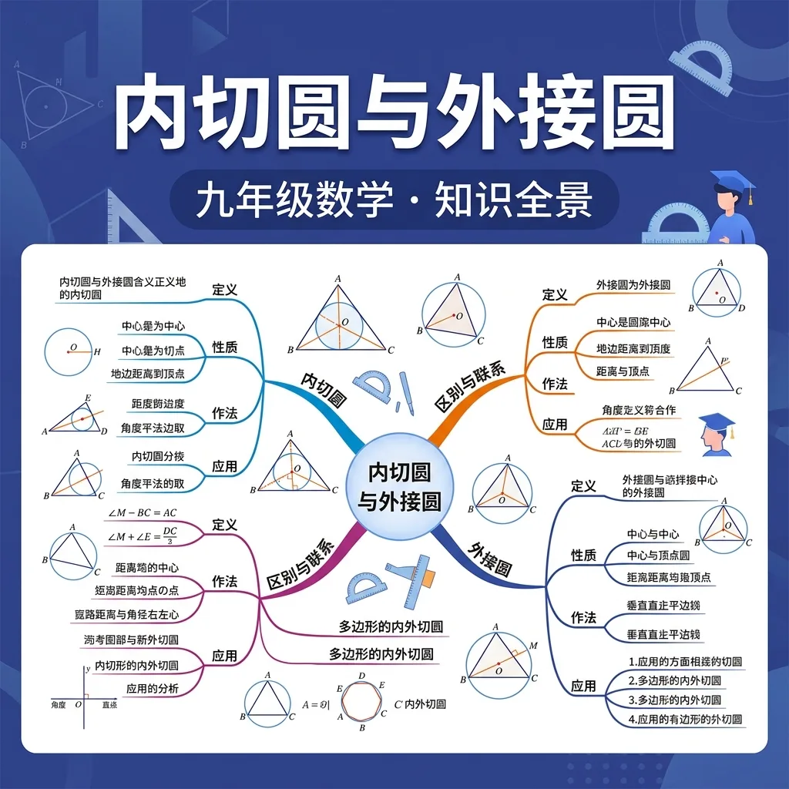
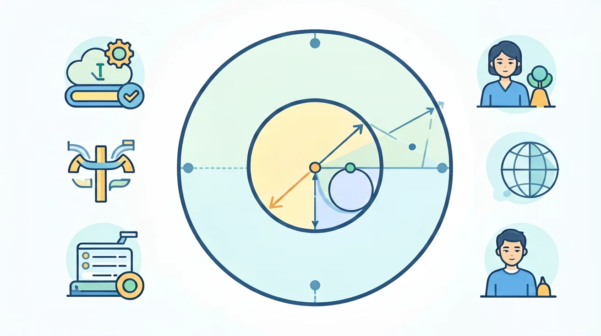
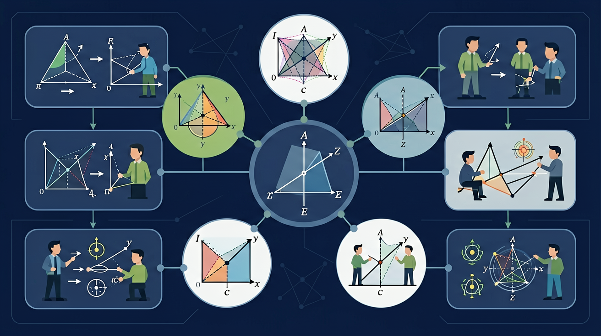

❓ 为什么有些三角形画不出外接圆？
❓ 内切圆圆心怎么找？用尺规能画吗？
❓ 直角三角形内切圆半径有没有简便算法？
学完这一课，这些问题你都能自信地回答。
🎯 能说出三角形外接圆与内切圆的定义
🎯 能判断锐角/直角/钝角三角形外接圆位置差异
🎯 能计算特殊三角形内切圆半径（如等边三角形）

1. 三角形有几条角平分线？它们有什么特点？
2. 三角形各边的垂直平分线交于一点，该点叫？
三个城市A、B、C要建一个等距离的通信中心——And中心到三个城市距离相等（都等于外接圆半径）；But这个中心就是三角形的外心；Therefore三角形外接圆圆心是三边垂直平分线的交点（外心），到三顶点等距！
直角三角形斜边长10，外接圆半径R=？
等边三角形边长为a，其外接圆半径R=？
往三角形草地里放一个最大的圆形喷水池——And圆不能超出三角形边界，且要尽量大；But圆必须与三条边都相切（恰好接触）；Therefore这个最大圆就是三角形的内切圆，其圆心（内心）到三条边距离相等！
三角形三边为3、4、5（直角三角形），内切圆半径r=？
等边三角形边长为a，内切圆半径r与外接圆半径R的比r:R=？
| 特征 | 外接圆（外心O） | 内切圆（内心I） |
|---|---|---|
| 圆心构造 | 三边垂直平分线交点 | 三角平分线交点 |
| 圆与△关系 | 过三顶点 | 切三条边 |
| 半径公式 | R=a/(2sinA) | r=S/s |
| 直角△特例 | R=斜边/2 | r=(a+b-c)/2（c为斜边） |
直角三角形两直角边为6和8，求其内切圆半径r和外接圆半径R？
某公园有一块三角形草坪，三边长分别为5m、12m、13m。
1. 三角形外心到三条边的距离关系是？
2. 边长为6的等边三角形，内切圆半径r=？
3. 下列哪类三角形的外心在三角形内部？
4. 三角形内心一定在三角形内部，这个说法正确吗？
三角形外心、重心、垂心共线（欧拉线），这是古典几何的重要定理
三点确定外接圆——GPS卫星定位用三圆相交确定位置的原理
圆形建筑内接三角形结构——内切圆与外接圆在建筑力学中的应用
每个三角形都有一个神奇的"九点圆"，它与内切圆、外接圆有深刻关系
先独立作答，再点选项查看对错与错因。
若直角三角形两直角边为5cm和12cm，其内切圆半径是
关于三角形的外接圆，正确的是
已知△ABC内切圆半径为3cm，面积为24cm²，其周长是
边长为6cm的等边三角形，其内切圆半径是____cm
答案：√3
等边三角形内切圆半径公式r=a√3/6，6×√3/6=√3
直角三角形外接圆半径等于____的一半
答案：斜边
直角三角形外接圆直径等于斜边，半径即为斜边一半
下列哪个条件能唯一确定三角形外接圆？
比较锐角/直角/钝角三角形的内切圆与外接圆半径关系
外接圆：三边垂直平分线交点→圆心；内切圆：角平分线交点→圆心
外接圆像帐篷支架包住三角形，内切圆像最大披萨卡在三角形里
外接圆必存在，内切圆仅存于可内切多边形（如三角形都行）
动态演示：拖动三角形顶点观察两圆圆心运动轨迹
蒙古包设计用外接圆原理，园林石径用内切圆原理
✅ 外接圆→过顶点，内切圆→切三边
💡 术语记忆混淆
✅ 任何三角形都有外接圆，钝角三角形圆心在外
💡 图形直观干扰
口诀：外接圆垂直平分找，内切圆角平分线交
类比：外接圆像雨伞骨架，内切圆像锅里的煎蛋
哪个是三角形外接圆定义？
等边三角形内切圆半径公式是？
（中考题）Rt△ABC中∠C=90°，AC=3 BC=4，内切圆半径=？
（迁移）公园喷泉要覆盖三个凉亭，选址应依据？
（综合）关于△ABC，错误的是？

开放任务：用三步写出你如何向同学讲清「内切圆与外接圆」。
